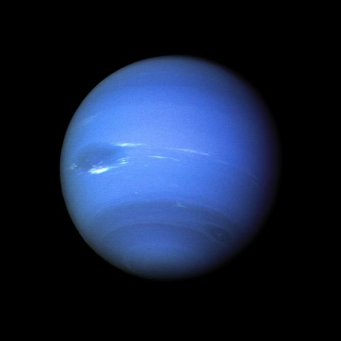

introduction
Neptune is the eighth and farthest known planet from the Sun. It is the fourth-largest planet in the Solar System by diameter, the third-most-massive planet, and the densest giant planet. It is 17 times the mass of Earth, and slightly more massive than fellow ice giant Uranus. Neptune is denser and physically smaller than Uranus because its greater mass causes more gravitational compression of its atmosphere. Being composed primarily of gases and liquids, it has no well-defined solid surface. The planet orbits the Sun once every 164.8 years at an orbital distance of 30.1 astronomical units (4.5 billion kilometres; 2.8 billion miles). It is named after the Roman god of the sea and has the astronomical symbol ♆, representing Neptune's trident.
Mean radius: 24,622±19 km
Surface area: 7.6187×109 km2 (14.98 Earths)
Surface gravity: 11.15 m/s2
Atmosphere
Composition by volume- 80%±3.2% hydrogen
- 19%±3.2% helium
- 1.5%±0.5% methane
- ~0.019% hydrogen deuteride
- ~0.00015% ethane Icy volatiles: ammoniawater iceammonium hydrosulfidemethane ice
Picture
About1
Neptune is not visible to the unaided eye and is the only planet in the Solar System that was found from mathematical predictions derived from indirect observations rather than being initially observed by direct empirical observation. Unexpected changes in the orbit of Uranus led Alexis Bouvard to hypothesise that its orbit was subject to gravitational perturbation by an unknown planet. After Bouvard's death, the position of Neptune was predicted from his observations, independently, by John Couch Adams and Urbain Le Verrier. Neptune was subsequently directly observed with a telescope on 23 September 1846 by Johann Gottfried Galle within a degree of the position predicted by Le Verrier.
about2
Its largest moon, Triton, was discovered shortly thereafter, though none of the planet's remaining 15 known moons were located telescopically until the 20th century. The planet's distance from Earth gives it a small apparent size, making it challenging to study with Earth-based telescopes. Neptune was visited by Voyager 2, when it flew by the planet on 25 August 1989; Voyager 2 remains the only spacecraft to have visited it. The advent of the Hubble Space Telescope and large ground-based telescopes with adaptive optics has allowed for additional detailed observations from afar.
closing
In contrast to the strongly seasonal atmosphere of Uranus, which can be featureless for long periods of time, Neptune's atmosphere has active and consistently visible weather patterns. At the time of the Voyager 2 flyby in 1989, the planet's southern hemisphere had a Great Dark Spot comparable to the Great Red Spot on Jupiter. In 2018, a newer main dark spot and smaller dark spot were identified and studied. These weather patterns are driven by the strongest sustained winds of any planet in the Solar System, as high as 2,100 km/h (580 m/s; 1,300 mph).Because of its great distance from the Sun, Neptune's outer atmosphere is one of the coldest places in the Solar System, with temperatures at its cloud tops approaching 55 K (−218 °C; −361 °F).